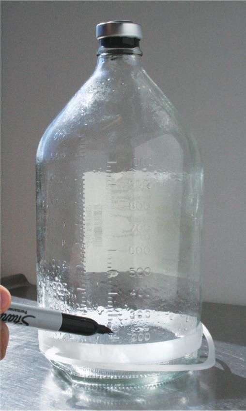
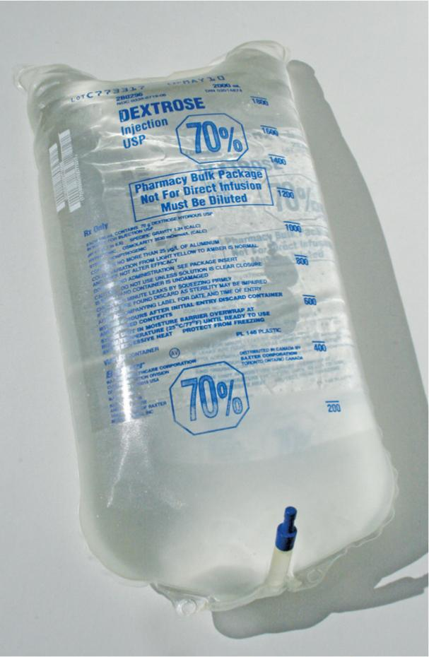
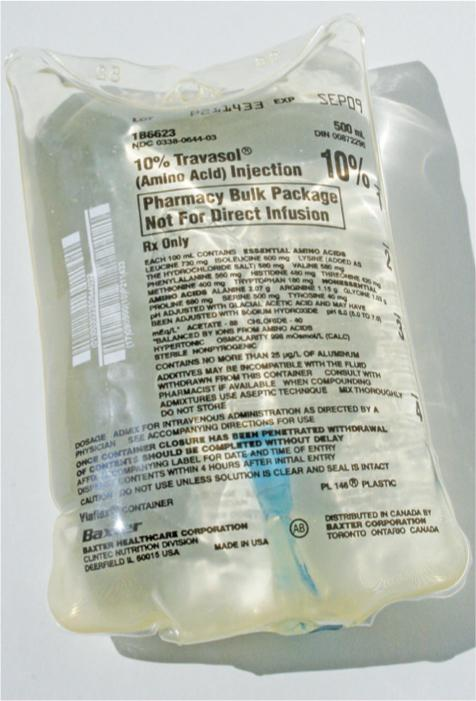
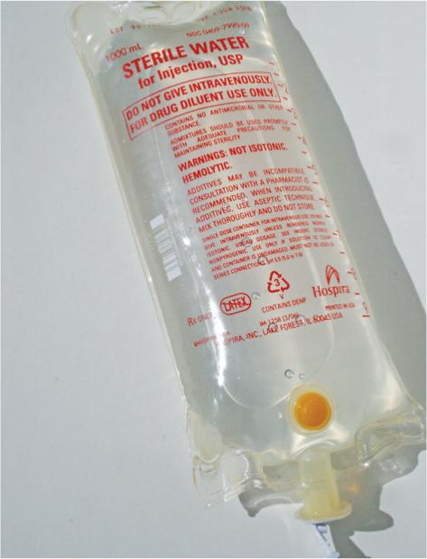
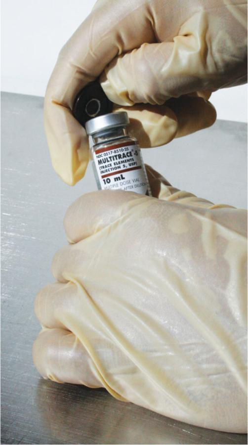
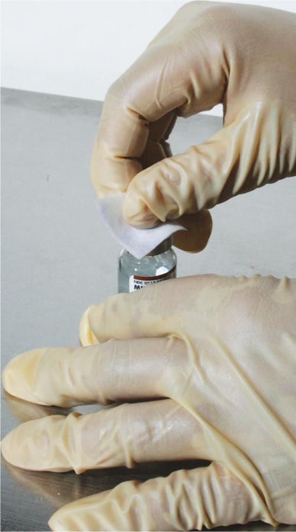
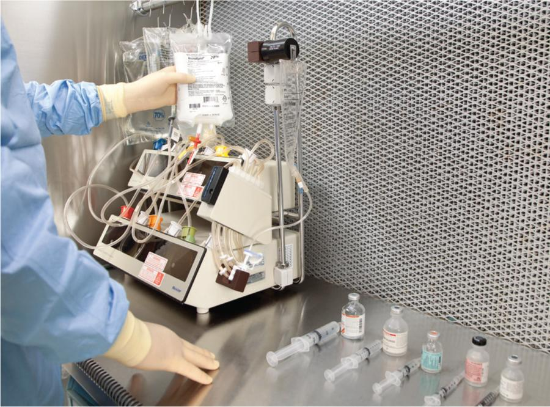
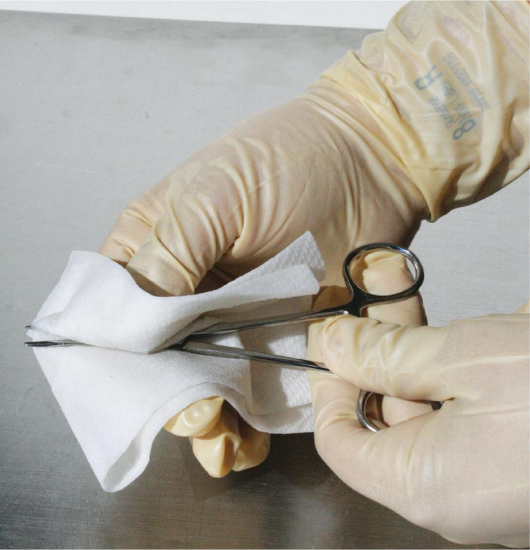

Part 2: Training
15.13 Preview the Procedural Lab
Now that you, as a sterile compounding student, have a basic understanding of the preparation, supplies, and administration of PN therapy, you have the opportunity to preview—and subsequently perform—the sterile compounding of a PN solution. In general, teaching environments do not have ready access to ACDs. Therefore, for the purpose of the Chapter 15 Procedural Lab, instruction will be provided in the proper procedures necessary to perform a manual PN compounding procedure.
First, read the Preview the Procedural Lab section. Then carefully read each step of the Procedural Lab section. Next, reinforce your understanding by watching the demonstration video. Once you are in the lab, your instructor will demonstrate the procedure, and then you will perform the procedure by following the steps in the Procedural Lab section. After sufficient practice, you will complete the competency assessment that will be observed by your instructor.
Note: This procedural lab requires the use of a horizontal laminar airflow workbench. For pharmacies that do not have this type of PEC, sterile compounding personnel should consult the Instruction Guide provided by the PEC’s manufacturer or their facility’s SOPs to determine which procedures may need to be adjusted to suit their PEC.
Anteroom Preparatory Procedures
For the purposes of this lab, you will prepare for the sterile compounding process in the anteroom. In practice, you may perform some of these preparatory procedures before entering the anteroom, depending on a facility’s SOPs. The anteroom provides a transition space for implementing the procedures discussed in Chapters 5–9 of this textbook, including:
- verifying the CSP label against the medication order
- performing pharmacy calculations to determine type, size, and number of supply items needed
- gathering and staging supplies
- performing hand hygiene
- donning garb.
Verifying the CSP Label
Compare the PN order form to the CSP label to verify that all of the information on the CSP label is correct. Read the CSP label to determine the desired concentration, volume of each of the base solution components, and total volume. Then read the CSP label to determine the additives that must be used to prepare the PN solution. Read the label on the first additive vial to determine its concentration; then repeat that action for each additive to be used in this procedure.
Performing Pharmacy Calculations
Read the manufacturer’s solution identification information on the container of each base solution component to determine concentrations. Perform a separate calculation to determine the volume of each base solution component needed to prepare the PN solution. In order to easily measure the amount of each base solution component, use a permanent marker to draw a line on the EEC to signify the dextrose volume. Draw separate lines on the EEC to indicate the volume of AAs and the volume of SWFI to be added to the EEC.
Using information gleaned from the CSP label and each additive vial label, calculate the desired volume of each additive to be used in this procedure. The desired volume is the volume that you must withdraw from each vial to deliver the dose ordered by the prescriber. (For additional assistance on performing calculations, refer to Chapter 7 of this textbook.)

Gathering and Staging Supplies
Once all calculations are complete, place the CSP label into a small plastic bag, place the PN order into a large plastic bag, and seal both bags. Gather and wipe down all of the necessary compounding supplies with an appropriate agent before bringing them into the clean side of the anteroom. (For detailed information on the USP <797> protocol for this anteroom procedure, refer to Chapter 10.)
Donning Garb
Now that you have assembled and wiped the exterior surfaces of necessary supplies, you must don garb, a requirement for working in the cleanroom. Before donning garb, ensure you are wearing close-toed shoes and either a clean scrub uniform or other approved, lightweight, nonshedding clothing, and that you have removed cosmetics, jewelry, and other items prohibited in the sterile compounding area. Then don shoe covers; a head cover and, if necessary, a facial hair cover; a face mask; and a gown. Apply an alcohol-based hand rub to all surfaces of hands and fingers and allow the surfaces to dry before donning sterile gloves. (Note: This procedure may also be performed in the buffer room.)
Due to time constraints, you will not perform hand-washing procedures during this procedural lab. Keep in mind that, in sterile compounding practice, handwashing is mandatory and must be performed prior to donning sterile gloves. If you are performing this procedural lab in a working buffer room, you must perform all hand hygiene and garbing procedures before entering the buffer room. (For additional assistance on the procedure for donning garb, refer to Chapter 8 of this textbook.)
Buffer Room Preparatory Procedures
When preparing PN preparations for patient administration, sterile compounding personnel must diligently follow established buffer room procedures as well. These procedures, discussed in Chapters 8 and 9, include the following actions:
- sanitizing hands with an alcohol-based hand rub
- donning sterile gloves
- cleaning and disinfecting the PEC.
Due to time constraints in the classroom, you will not perform PEC cleaning and disinfection procedures during this procedural lab. Keep in mind that, in sterile compounding practice, PEC cleaning and disinfection procedures are mandatory and must be performed prior to beginning sterile compounding procedures and at intervals prescribed by USP <797>.
Arranging and Preparing Supplies in the PEC
Upon entering the buffer room, place the transport basket or tray onto a clean table or cart. If the transport vehicle used is a cart, wheel it so that it is positioned away from the PEC’s prefilter. If not performed previously, sanitize your hands with an alcohol-based hand rub, allow your hands to dry thoroughly, and then don sterile gloves.
Next, wipe your sterile gloves with sterile 70% IPA and allow your gloved hands to dry thoroughly. Then use low-lint wipers to wipe the exterior surfaces of supply items with sterile 70% IPA and allow the items to dry before introducing the items into the PEC. If a supply item is in a sealed container to maintain its sterility, the sterile item should be removed from the container as the item is introduced into the PEC and should not be wiped.
Place small supply items—such as the vials, needles, syringes, sterile 70% IPA swabs, and tamper-evident, sterile, adhesive seals—in the outer six-inch zone of the PEC, which is used as a staging area prior to bringing the supplies into the DCA of the PEC. Due to the large number of supplies used in the Chapter 15 Procedural Lab, bring large supply items into the PEC in stages in the order that they are needed. Remember to wipe your gloved hands with sterile 70% IPA each time your gloved hands leave the PEC.
PN Compounding Procedure
When compounding a PN solution, you must follow a specific order for mixing the ingredients. As mentioned earlier, you begin with the base solution components: dextrose first, followed by AAs, and then SWFI. You will add the additives last.
Adding the First Base Component to the EEC
With the small supply items arranged in the outer six-inch zone of the PEC, you are ready to begin the PN compounding procedure. Wipe your gloved hands with sterile 70% IPA and allow your gloved hands to dry. Then remove the outer dust cover from the first base component (in this lab, dextrose 70% in water [D70W]); then discard the dust cover into the waste container. Temporarily place the D70W bag onto the PEC’s work surface within the DCA. Remove the IV tubing from its outer wrapper and discard the wrapper into the waste container. Then place the IV tubing; capped, regular needle; and a sterile 70% IPA swab into the DCA of the PEC.

Shut the clamp on the IV tubing by rolling it downward. Note that at one end of the IV tubing there is a needle adapter. Remove the cap from this needle adapter and place it into the start of a discard pile. While still holding the needle adapter, carefully remove the outer wrapper from a capped, regular needle. Aseptically attach the capped needle to the needle adapter. Place the needle wrapper into the discard pile. Temporarily place the IV tubing—with the attached, capped needle—onto the PEC’s work surface within the DCA.
Grasp the pull tag on the tubing port plug of the D70W bag. Pull down on the pull tag to remove it from the tubing port. Grasp the drip chamber of the IV tubing with your thumb and forefinger, so that the tip of the IV tubing spike is pointing toward your other hand, and your thumb and forefinger rest against the plastic crossbar. Remove the cap from the IV tubing spike and place it into the discard pile. Then carefully insert the spike into the bag’s tubing port. Hang the D70W bag, with attached IV tubing, on a hook on the PEC’s hang bar.
Wipe your gloved hands with sterile 70% IPA and allow your gloved hands to dry. Then wipe the EEC with sterile 70% IPA and bring the EEC into the DCA of the PEC. Carefully remove the aluminum cap by gently lifting up the small pull tag on the top of the cap; then grasp the pull tag and pull it down toward the bottom of the EEC, pulling the tag all the way down and removing it. Take care not to twist the tag, so that it does not break in two. Once the entire tag has been removed, use it as a tool for prying off the aluminum ring that encircles the rubber stopper of the EEC. Lift off and then discard the coin-like aluminum circle resting atop the EEC’s rubber stopper. This technique is illustrated in Figure 15.5.

Position the EEC within the DCA so that the top of the EEC receives uninterrupted airflow from the PEC’s HEPA filter. Remove a sterile 70% IPA swab from the package and wipe the rubber top of the EEC. Place the used swab onto the PEC’s work surface within the DCA and place the wrapper into the discard pile. Pick up the IV tubing at the capped needle end, holding the tube at the adapter. Remove the needle cap and place it on the 70% IPA swab on the PEC’s work surface. Then use proper needle insertion procedures to insert the needle—with attached tubing—into the top of the EEC.
Begin the flow of D70W into the EEC by rolling up the IV tubing clamp. Monitor the flow of dextrose into the EEC. When the volume of fluid in the EEC reaches approximately 20 mL less than the desired volume of D70W (in this case, the desired volume of D70W is equivalent to the first, or lowest, mark you made on the EEC bottle), roll the tubing clamp down to restrict the flow rate to a slow trickle. Roll the clamp completely shut when the meniscus rests on the desired fluid measurement (as per the graduation line drawn on the EEC). Ask your instructor or a pharmacist for a verification check of the D70W volume before continuing with the procedural lab.
Carefully remove the needle with attached IV tubing from the EEC and recap the needle. Loop the tubing with attached, capped needle over the hook on the PEC’s hang bar that holds the D70W bag. Slide the bag of D70W with attached tubing and capped needle to the one side of the hang bar, so that it does not interrupt airflow from the PEC’s HEPA filter.
Adding the Second Base Component to the EEC
Wipe your gloved hands with sterile 70% IPA and allow your gloved hands to dry. Then remove the outer dust cover from the second base component (in this lab, AA 10%), and then discard the dust cover into the waste container. Temporarily place the AA 10% bag onto the PEC’s work surface within the DCA, and then remove the pull tag from the tubing port. Open the outer wrapper of new IV tubing, remove the tubing, and discard the wrapper into the waste container. Place the IV tubing into the DCA. Remove the cap from the tubing spike, place the cap into the discard pile, and carefully insert the tubing spike into the tubing port of the AA 10% bag. Attach a capped regular needle to the opposite end of the tubing.

Place the bag of AA 10% onto another hook of the hang bar within the PEC. Carefully remove the needle cap and insert the needle into the EEC. Begin the flow of AA 10% into the EEC by rolling the tubing clamp up. Monitor the flow of AA 10% into the EEC. When the volume of fluid in the EEC reaches approximately 20 mL less than the desired combined volume (or the volume of D70W plus the volume of AA 10%, indicated by the second or middle mark you drew earlier on the EEC), roll the tubing clamp down to reduce the flow rate to a slow trickle.
Roll the clamp completely shut when the meniscus rests on the desired fluid measurement (as per the graduation line drawn on the EEC). Ask your instructor or a pharmacist for a verification check of the AA volume. (Note: The instructor or pharmacist will verify that the proper amount of Aminosyn has been added to the EEC by adding the volume of AA plus the previously added volume of D70W.)
\[\begin{array}{l} \,\,\,\,\,\,\,\,\,\,\,\\ \frac{{\,206\,{\rm{ mL }}\left( {{\rm{volume\, of }\,}{{\rm{D}}_{70}}{\rm{W \,previously\, added \,to\, the\, EEC}}} \right){\rm{ \,+ \, 336 \,mL (volume\,of \,AA \,10\%\, added\, to\, the\, EEC)}}}}{{{\rm{542\, mL (volume\, currently\, in\, the\, EEC)}}}} \end{array}\]

After your instructor or a pharmacist has completed the verification check of the AA 10% volume, carefully remove the needle with attached IV tubing from the EEC and recap the needle. Loop the tubing with attached, capped needle over the hook on the PEC’s hang bar that holds the AA 10% bag. Slide the bag of AA 10% with attached tubing and capped needle to one side of the PEC’s hang bar so that it does not interrupt airflow from the HEPA filter.
Adding the Final Base Component to the EEC
Wipe your gloved hands with sterile 70% IPA and allow your gloved hands to dry. Then remove the outer dust cover of the final base component bag (in this lab, SWFI). Discard the dust cover into the waste container. Temporarily place the SWFI bag onto the PEC’s work surface within the DCA, and then pull down on the pull tag to remove it from the tubing port. Open the outer wrapper of new IV tubing, remove the tubing, and discard the wrapper into the waste container. Place the IV tubing into the DCA of the PEC. Remove the cap from the tubing spike, place the cap into the discard pile, and immediately insert the spike into the tubing port of the SWFI bag. Attach a capped regular needle to the opposite end of the tubing.
Hang the SWFI bag on another hook of the hang bar within the PEC. Carefully remove the needle cap and insert the needle into the EEC. Begin the flow of SWFI into the EEC by rolling the tubing clamp up. Closely monitor the flow of SWFI into the EEC. When the volume of fluid in the EEC reaches approximately 20 mL less than the desired total volume (or the volume of D70W plus the volume of AA 10% plus the volume of SWFI, indicated by the third or uppermost line that you drew earlier on the EEC), roll the clamp down to reduce the flow rate to a slow trickle.
Roll the clamp completely shut when the meniscus rests on the desired fluid measurement (as per the graduation line drawn on the EEC). Ask your instructor or a pharmacist for a verification check of the SWFI volume in the EEC.
After your instructor or a pharmacist has completed the verification check of the SWFI volume, carefully remove the needle with attached IV tubing from the EEC and recap the needle. Loop the tubing with attached, capped needle over the hook on the PEC’s hang bar that holds the SWFI bag. Slide the bag of SWFI with attached tubing and capped needle to one side of the hang bar so that it does not interrupt airflow from the PEC’s HEPA filter. Maintain the EEC within the DCA of the PEC.


Preparing the Syringes of PN Additives
Place all of the remaining supply items into the outer six-inch zone of the PEC. Review the CSP label to determine the first additive listed on the label; this additive is listed immediately below the base solution components, near the top of the CSP label.
Bring the first additive vial into the DCA, remove the flip-top cap, and wipe the vial stopper with a sterile 70% IPA swab. Assemble the appropriate-sized syringe and capped needle in such a way as to avoid touch contamination and shadowing of the syringe tip and needle hub. After removing the needle cap, place it on a new 70% sterile IPA swab. Then use aseptic technique to insert the needle into the additive vial. Perform the milking technique to withdraw the appropriate volume of the first additive into the syringe. After removing bubbles and verifying the correct volume, aseptically cap the needle. Place the filled-and-capped additive syringe next to the additive vial on the PEC’s work surface within the DCA. (Note: For the purposes of this procedural lab, place each additive syringe to the immediate left of the vial from which it was withdrawn.)
Then bring the second additive vial into the DCA, remove the flip-top cap, and wipe the vial stopper with a sterile 70% IPA swab. Aseptically assemble the appropriate syringe and capped needle. After removing the needle cap, set it on a new sterile 70% IPA swab. Then use aseptic technique to insert the needle into the vial. Perform the milking technique to withdraw the appropriate volume of the additive into the syringe. After removing bubbles and verifying the correct volume, aseptically cap the needle. Place the filled-and-capped additive syringe to the immediate left of the additive vial on the PEC’s work surface within the DCA.
Repeat this procedure with each of the remaining additive vials. After you have placed each of the additives to the immediate left of the vials from which they were withdrawn and lined up the syringes and vials, left to right, within the DCA, await a verification check by your instructor or a pharmacist.

Injecting the PN Additives into the EEC
After the verification check, open a sterile 70% IPA swab package, remove the swab, and place the empty package into the discard pile. Then wipe the rubber top of the EEC. Before injecting the first additive, remember to inject the additives in the correct order (the last two additives are calcium gluconate and MVI, respectively) and to avoid the holes in the EEC’s rubber top made by previous needle insertions.
Pick up the first additive syringe containing phosphate (in this case, the potassium phosphate syringe), holding it as you would a dart. After removing the needle cap and placing the cap into the discard pile, use proper needle insertion technique to insert the needle into the rubber top of the EEC. Inject the entire contents of the syringe into the EEC. Carefully remove the empty needle-and-syringe unit from the EEC, and discard it into the sharps container.
Wipe sterile gloves with sterile 70% IPA and allow to dry thoroughly. Wipe the rubber top of the EEC with a new, sterile 70% IPA swab. Pick up the syringe containing the next additive from the PEC’s work surface. After removing the needle cap and placing the cap into the discard pile, use proper needle insertion to insert the needle into the top of the EEC. (Note: The vacuum within the EEC may pull the fluid out of the syringe and into the EEC without you having to push down on the plunger’s flat knob.) Inject the syringe contents into the EEC. Discard the empty needle-and-syringe unit into the sharps container.
Wipe sterile gloves with sterile 70% IPA and allow to dry thoroughly. Repeat the procedure with each of the remaining additives, until all of the additives have been injected into the EEC. Examine the filled EEC for solution clarity, particulate matter, or evidence of incompatibility. Label the EEC containing the compounded PN solution with the CSP label, and affix a tamper-evident, sterile, adhesive seal to the EEC’s rubber top.
Performing Clean-up Procedures
Upon completion of the PN compounding procedure, dispose of used vials and supply items in the appropriate waste containers. Before removing the three base component bags from the DCA, use a hemostat to clamp the tubing port of the first bag, just above the site where the tubing spike is lodged in the tubing port. Once the tubing port has been securely clamped, remove the tubing spike from the bag and immediately discard the tubing with attached, capped needle into the sharps container. Wipe sterile gloves with sterile 70% IPA and allow to dry thoroughly. Repeat the aforementioned disposal process with the two remaining base component bags. Place the PN solution, clamped base component bags, and any unused supply items into the transport vehicle, and then return the items to the anteroom.
Once in the anteroom, destroy the base component bags by cutting off the bags’ tails with a pair of scissors, draining their contents down the sink, and then discarding the empty bags into a waste container. Wipe off the hemostats and scissors with a sterile, lint-free wiper saturated with SWFI. Follow this action by wiping the items thoroughly with sterile 70% IPA, and then return the items to their storage locations in the anteroom.
Record the BUD and your initials on the CSP label. Remove your garb in the order and manner described in Chapter 8 of this textbook.
